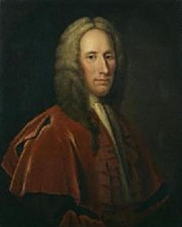

Lord President Forbes
Slow Strathpey - Simon Fraser Collection N°222
Tune
Sequenced by Ch.Souchon

Lord Duncan Forbes of Culloden (1685 - 1747)


Lord Duncan Forbes of Culloden (1685 - 1747)
|
Lord Duncan Forbes of Culloden (1685-1747) had a rapid advancement as a jurist thanks to his loyalty to the Hanoverian cause at the period of the rebellion in 1715. He became member of Parliament for Inverness in 1722 and Lord Advocate in 1725. He inherited the patrimonial estates on the death of his brother in 1734, and in 1737 he was made Lord President of the Court of Session in Scotland.
As Lord Advocate, he did much to improve the legislation and revenue of the country, to extend trade and encourage manufactures, and to render the government popular and respected in Scotland. He initiated many useful legal reforms with prompt and impartial administration of the law. He advocated the creation of Highland regiments with native chieftains and cadets of old families officering them to make a rebellion in the Highlands impossible. resulting, in 1739, in the formation of the famous “Forty-second” regiment of the line, the "Black Watch" . He was Lord President of the Court of Session of 1745. When he heard of the Jacobite rising, he used his personal influence with the powerful chiefs of Macdonald and Macleod whom he prevented from taking the field for Charles Edward. Through his persuasions, Inverness kept loyal and well protected at the commencement of the struggle. He didn't succeed in avoiding the battle but did his best to mitigate the fury of Cumberland and the British Government against the Highlanders.
His correspondence with
Lord Lovat
, published in the "Culloden papers", shows how his firmness of loyal principle and duty was mitigated with kindness and consideration. But the indifference of the authorities hindered him in his negotiations in which he had to engage his own means and borrowed money.
He was an erudite scholar who cultivated the study of philosophy, theology and biblical criticism and published, among others, "Some Thoughts concerning Religion, natural and revealed, and the Manner of Understanding Revelation" and "Reflections on Incredulity". |
Lord Duncan Forbes de Culloden (1685-1747) dut à sa loyauté envers les Hanovre, en 1715, sa fulgurante carrière de juriste : Député d'Inverness au Parlement en 1722, "Lord Avocat" en 1725. Il hérita des terres de ses ancêtres à la mort de son frère en 1734 et en 1737 il devint Président de la Cour de Session en Ecosse.
En tant que Lord Avocat, il contribua largement à améliorer la situation juridique et financière de son pays, à y promouvoir le commerce et les manufactures et à y faire accepter et respecter l'institution gouvernementale. Il est à l'origine de nombreuses réformes légales utiles et il se signala par une administration rapide et impartiale de la justice. Il plaida pour la création de régiments des Highlands dont les officiers seraient des chefs locaux et des cadets des grandes familles de la région, afin d'y rendre impossible une rébellion. Ce qui conduisit à la formation, en 1739, du fameux "42ème régiment de ligne", la "Garde Noire" .
Il était Lord President de la Cour de Session en 1745. Dès qu'il eut vent de l'insurrection Jacobite, il usa de son influence personnelle sur les chefs de grands clans comme les Macdonald et les Macleod pour les empêcher de se rallier à Charles Edouard. Il persuada les notables d' Inverness de rester loyaux et leur ville demeura protégée au début des combats. S'il ne parvint pas à empêcher la bataille de Culloden, il mit tout en oeuvre pour calmer la rage destructrice de Cumberland et du gouvernement britannique contre les Highlanders.
C'était un érudit épris de philosophie, de théologie et d'exégèse biblique et qui publia, entre autres, des "Considérations sur la religion naturelle et révélée et sur la façon de comprendre la révélation" et des "Réflexions sur l'incrédulité". |